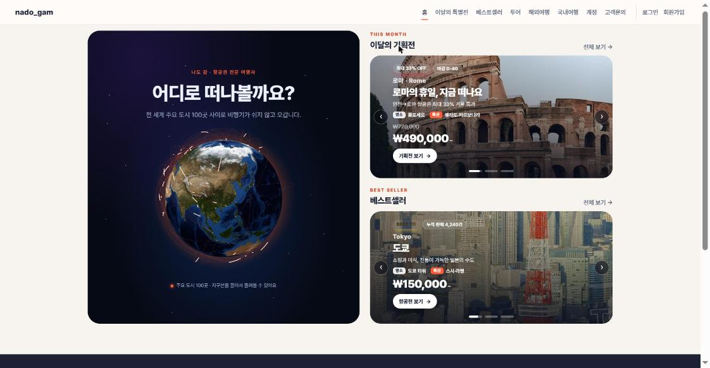
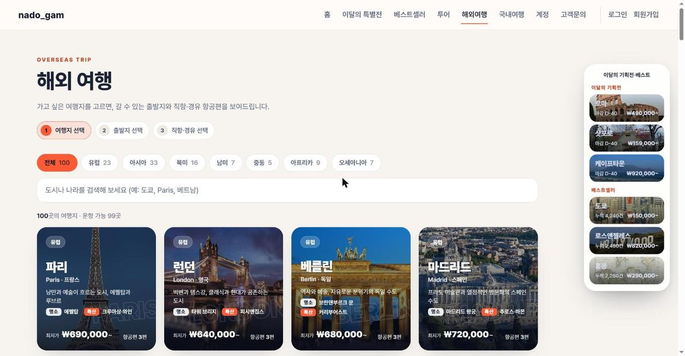
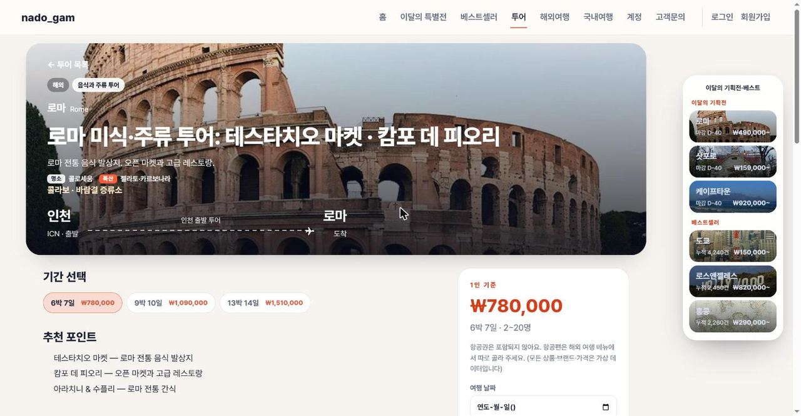
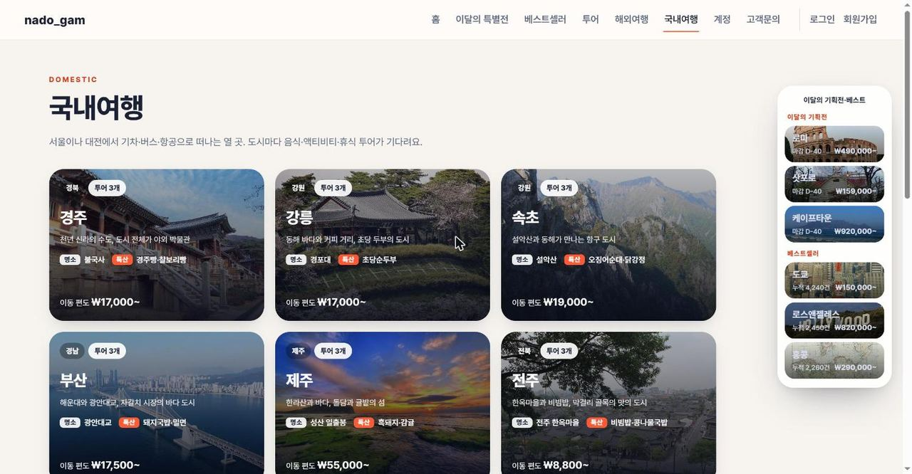

2차 개인 프로젝트 · 2026.11
어디로 떠나볼까요?
전 세계 100곳 사이로 비행기가 쉬지 않고 오가는 지구본이 첫 화면인 여행사 웹 서비스입니다. 해외 여행·국내 여행·투어·호텔·크루즈를 한 장바구니에 담고, 모의 결제 후 QR 탑승권으로 체크인까지 이어집니다.
- Java 17
- Spring Boot
- Spring Security
- JPA
- MySQL / H2
- Thymeleaf
- globe.gl
실행하면 이런 화면이 나와요
MAIN SCREEN · 지구본을 끌어서 돌려 보세요※ 실제 nado-gam 프로그램을 실행해 가져온 메인 화면입니다(지구본·사진·캐러셀 모두 실제 코드). 링크는 데모라 이동하지 않아요. 지구본은 인터넷 연결이 필요합니다.
핵심 기능
KEY FEATURES1
지구본 메인 화면
전 세계 도시 100곳 사이 무작위 경로 60개를 주황 선과 흐르는 불빛으로 표시. 끌어서 돌리면 관성으로 계속 회전합니다.
2
해외·국내 여행
여행지 먼저 선택 → 그 여행지로 가는 항공편이 있는 출발지만 표시. 직항/경유 필터, 정렬 6종, 대륙·국가 필터, 도시 사진 카드.
3
투어·호텔·크루즈
3테마(음식과 주류 / 스포츠와 액티비티 / 예술과 휴식) 투어, 박수별 옵션, 호텔·크루즈 객실까지 한 흐름으로 예약.
4
장바구니 · 모의 결제
항공권·이동편·투어·호텔·크루즈를 담아 결제하면 항공권 남은 좌석을 조건부 UPDATE로 차감하고 예약(PAID)을 저장합니다.
5
QR 탑승권 · 체크인
예약 확인·모바일 탑승권·체크인을 QR로. 관리자가 QR을 스캔해 체크인 처리합니다.
6
관리자 · 고객문의
회원 정지/복구, 상품 노출 관리, 특별전·투어·호텔·항공편 CRUD(휴지통 복구), 팝업 이벤트, 고객문의 답변.
규모
NUMBERS98해외 여행지
142투어
354호텔
169테스트
실제 구현 화면
SCREENSHOTS


